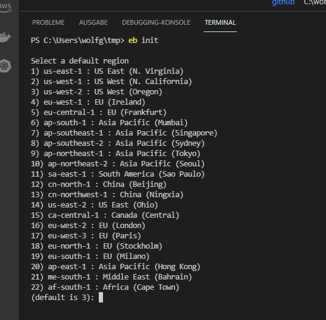
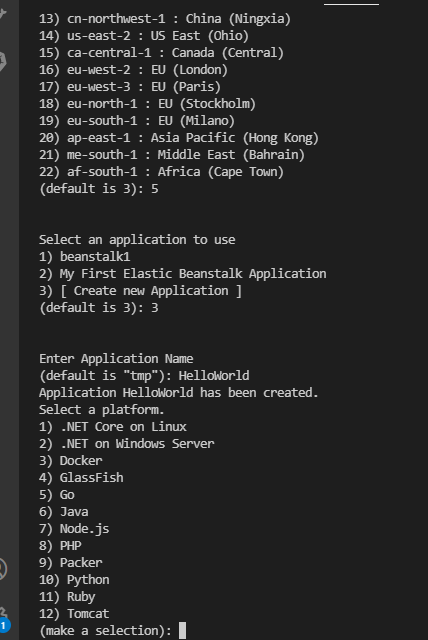

SCC
Brasil
os cloud gurus
Software Cloud Consulting
Your software development, cloud, consulting & shoring company
Deploy a Elastic Beanstalk Application in 1 min ( by commandline)
By Wolfgang Unger
This short tutorial shows how to deploy a simple ElasticBeanstalk application ( and environment
)
Install the EB commandline
If you don't have the EB CLI yet installed, please take a look in this docu and install
pip install awsebcli --upgrade --user
and add %USERPROFILE%\AppData\Roaming\Python\Python37\Scripts to you PATH variable ( on windows)
Setup the Application with CLI
First switch to your workspace folder ( for example eb-cli-test) and execute the following commands :
eb init
this will give you the list of aws-regions to choose from ( for install your eb-application)

choose your region, I will choose 4
For the option
Select an application to use
you can keep 3 and create a new application
Let's type HelloWorld

Let's select PHP (8)
Select a platform branch. You can stick to 1
Next: Do you want to setup SSH?
For this simple example let's say no, of course for a real application you want to setup this
Take a look in the new .elasticbeanstalk folder, you should a config.yaml with this content
branch-defaults:
default:
environment: null
group_suffix: null
global:
application_name: HelloWorld
branch: null
default_ec2_keyname: null
default_platform: PHP 8.0 running on 64bit Amazon Linux 2
default_region: eu-central-1
include_git_submodules: true
instance_profile: null
platform_name: null
platform_version: null
profile: null
repository: null
sc: null
workspace_type: Application
Please have a look the region and name confirms you your earlier inputs.Next we are going to create a index.html file
Just type
echo "Hello AWS Friends" > index.html
which will create the html file
Next we will create the environment and application with this command:
eb create int-env
Now you can already have a look in your AWS Account -> ElasticBeanstalk
and you should be able to see this environment (can take a minute)
Please have a look to the created resources ( EC2 instance, Autocaling Group, etc )
If you update your application files, for example you can modify the index.html, you have to execute
eb deploy
Some more commands you can use:
Open the application (here open a browser with the application URL)
eb open
Check the application status
eb status
check the app health
eb health
Finally let's terminate our application to avoid further costs:
eb terminate
See also this video about SSM on my youtube channel
Autor

Wolfgang Unger
AWS Architect & Developer
5 x AWS Certified
1 x Azure Certified
A Cloud Guru Instructor
Certified Oracle JEE Architect
Certified Scrum Master
Certified Java Programmer
Passionate surfer & guitar player